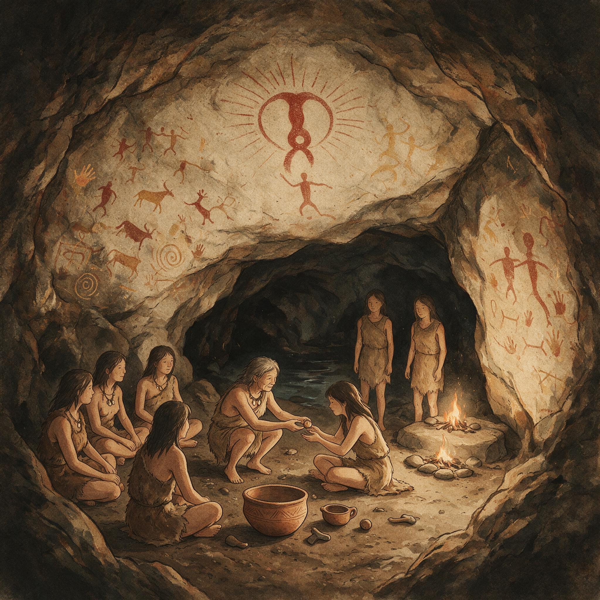

第 3 章
口传的暗河
维尔茨堡的审判记录中保存着一段简短的问答，发生在1628年。被告是一位助产士，记录上只写了她的名字“安娜”，没有姓氏。指控的罪名不是施行巫术，而是“使用魔鬼的草药阻止妇女受孕”。审

口传的暗河：历史出版插图
AI 生成插图，非史实影像。
判官问她从何处习得此术，她回答：“从我的母亲，从她的母亲。”
这条问答无意间揭示了一个延续数百年的知识传递结构。在官方医学和教会道德的双重封锁下，避孕知识正是通过女性亲属网络，以口传暗语的方式在地下流动。审判记录本身构成了证据：教会法庭知道这些知识存在，知道谁在传递它们，也知道传递的链条是什么。但审判的目的不是查证这些草药是否真的有效，而是判定掌握这些知识本身就是罪行。
避孕知识在经验药典时代已经被多个文明独立发现和记录，但进入中世纪之后，它没有沿着积累、检验、公开改进的路径发展，而是转入地下，成为一条暗河。这不是知识消失的故事——消失意味着不存在。暗河意味着它一直在流动，只是无法进入公共知识体系。
官方知识体系越是要垄断生育管理，民间实践就越依赖口传和暗语，结果使避孕技术无法获得积累、检验和公开改进的机会。这个过程在欧洲、伊斯兰世界和中国以不同的形式展开，但结构性的后果是相同的。欧洲的案例最为剧烈，因为它涉及一个完整的制度性压制链条。
古希腊罗马的医学典籍——迪奥斯科里德斯的《药物学》、老普林尼的《自然史》、索拉努斯的《妇科》——都记载了多种避孕草药和子宫托的使用方法。这些文本在中世纪早期并未失传。本笃会修道院的缮写室抄写保存了它们，修道院药草园种植了其中提到的植物。药草园清单显示，艾蒿、薄荷、欧芹等具有调节月经和早期流产作用的植物长期被种植。在12世纪之前，这些知识在修道院医学传统中并非秘密。希尔德加德·冯·宾根，一位12世纪的本笃会女修道院院长，在她的医学著作中记录了多种植物的妇产科用途，包括那些可以“清理子宫”的草药。她使用的语言谨慎，但知识本身是公开的。
这条知识传递路径在12世纪之后逐渐收窄。变化来自两个方面。在教会法层面，婚姻生育教义被系统性地强化。1215年第四次拉特兰会议之后，教会对婚姻的控制显著加强，生育被正式确立为婚姻的首要目的。任何阻止受孕的行为都被界定为“违反自然的罪行”。这个界定不是模糊的道德谴责，而是有具体教会法条款支撑的定罪依据。
在大学层面，经院医学开始系统性地排斥民间妇科知识。以盖伦体液学说为基础的正统医学由受过大学教育的男性医生掌握，他们逐步取代了部分助产士的功能，但拒绝接触与避孕相关的实践知识。在他们的著作中，避孕草药被归入“老妇人的迷信”范畴，不值得认真对待。
知识垄断由此形成。教会掌握生育的道德解释权，大学医学掌握生育的技术解释权。两者之间并非没有冲突——经院医学与教会权威在别的议题上常有摩擦——但在避孕问题上，它们的立场高度一致。生育是婚姻的目的，医学的任务是促进生育而非阻止它。任何与此相悖的知识都不应进入正统叙事。
助产士的位置因此发生了根本变化。在中世纪早期，助产士是社区中受尊重的女性，她们掌握从接生到妇科保健的一整套实践知识。但随着教会和大学医学的双重挤压，她们的知识被一分为二：接生技术被部分纳入正统医学的产科分支，避孕知识则被驱逐出公共领域。助产士的草药方子变成闺房秘传，只能在女性亲属之间口口相传。传递的方式决定了知识的形式。
口传知识不使用书面配方，而使用便于记忆的暗语和代称。某种草药被称为“女人的朋友”，某种用法被描述为“让月经恢复”——即使使用者清楚地知道它的目的是阻止受孕。暗语不仅是为了躲避教会和医生的审查，也是一种知识编码方式：只有身处传递链条中的女性才能理解这些词语的真正所指。
但这种编码方式有一个致命的代价。口传暗语无法精确量化。一撮草药是多少？煎煮多长时间？不同体质的人是否需要调整剂量？这些在书面医学中可以逐步细化的参数，在口传系统中只能依赖个人经验。而个人经验无法被其他人的经验纠正，因为每个传递者都在独立操作，没有公开的检验机制。
后果是显而易见的。经验药典中的配方在口传过程中不断失真。迪奥斯科里德斯记载的某种避孕草药用法，经过几个世纪的口传之后，可能在欧洲不同地区演变成截然不同的版本，有的剂量不足以致无效，有的剂量过量以致危险。没有人能够比较这些版本，因为每个版本都藏在各自的暗河中。知识在流动，但没有积累。
修道院药草园的命运也反映了这一过程。在12世纪之前，修道院医学对避孕草药保持实用主义态度。但到了14世纪，许多修道院的药草园清单中，那些与妇科相关的植物被标注了新的用途说明——“用于促进分娩”代替了“用于清理子宫”，“调节月经”代替了“阻止受孕”。名称还在，但官方记录中的用途已经被改写。植物被保留，因为它们确实有其他医学用途，但与避孕相关的知识被从书面记录中抹去。
抹去不等于消失。修道院的修女们——其中许多人来自贵族家庭，受过基本的拉丁文教育——仍然可能通过内部口传保留这些知识。但她们不会把这些写进修道院的药草记录。书面记录是公开的，或者至少是可能被上级审查的。口传是安全的，只要传递链条不被打破。
巫术审判是这条暗河最极端的暴露方式。15世纪到17世纪，欧洲的巫术审判浪潮波及数万人，其中大部分是女性。审判记录中反复出现一个指控类型：被告使用草药阻止妇女受孕或导致流产。审判者并不否认这些草药有效。
恰恰相反，正是因为他们相信这些草药确实能阻止生育，才将其定性为巫术。如果他们认为这只是无效的迷信，指控就失去了神学上的严重性。审判记录因此成为避孕知识存在的最确凿证据。在德意志地区、瑞士、法国和英格兰的审判档案中，可以找到被指控的助产士供述的草药名称和使用方法。这些供述通常是在酷刑下取得的，其准确性当然需要谨慎对待。但多个独立案件中出现相同的草药组合——艾蒿、芸香、薄荷、欧芹籽——表明这些配方并非审讯者的发明，而是确实在女性网络中流传的知识。
审判的后果是双重的。一方面，它直接摧毁了知识的传递者。一个被处决的助产士意味着一条传递链条的断裂。她的女儿可能知道一些配方，但可能不知道全部，或者不敢再使用，或者不敢再传给下一代。
另一方面，审判产生了更广泛的寒蝉效应。那些没有被指控的助产士学会了更加小心。暗语变得更加晦涩，传递范围进一步缩小到最亲密的女性亲属之间。知识变得更加碎片化。但审判也产生了另一种意想不到的效果。
审判记录的书面性质意味着，那些被驱逐出正统医学文献的避孕知识，以“罪证”的形式重新进入了文字记录。一个助产士在审判中供述的配方，被书记员详细记录下来，存入法庭档案。几个世纪后，当历史学家开始系统研究巫术审判档案时，这些配方重新浮出水面。暗河在无意中被文字捕捉到了——不是作为医学知识，而是作为犯罪证据。
伊斯兰世界的情况与欧洲形成对照，但最终的结构性后果相似。阿拉伯医学在9世纪到13世纪期间系统性地翻译和继承了希腊罗马医学典籍。迪奥斯科里德斯的《药物学》被译成阿拉伯语，老普林尼和索拉努斯的著作也被伊斯兰医学家广泛引用。避孕知识因此得以保留在阿拉伯医学典籍中，没有被从文字记录中抹去。拉齐、伊本·西那等大医学家的著作中都有专门章节讨论避孕方法，包括草药、子宫托和体外排精。但这并不意味着避孕知识在伊斯兰世界获得了公开改进的机会。阿拉伯医学家把避孕置于一个复杂的框架之下，这个框架包括婚姻法、医学伦理和神学判断。
伊斯兰教法对避孕的态度并非一律禁止——体外排精在某些法学派别中被允许，前提是得到妻子的同意——但这种允许是有条件的。避孕被允许的理由通常是保护母亲的健康、间隔生育或家庭经济考虑，而不是赋予个体自主控制生育的权利。
更重要的是，阿拉伯医学典籍虽然记录了避孕方法，但这些记录被嵌入一个等级化的知识体系中。医学著作是用阿拉伯语或波斯语写成的，只有受过系统教育的男性医生才能阅读。民间女性口传网络与这个书面知识体系之间几乎没有交集。一个巴格达的医生可能知道伊本·西那记载的避孕草药，但一个开罗的助产士不会读到这些著作。
她依赖的是自己的口传传统，而这个传统与书面医学一样，停留在经验层面，无法积累和优化。阿拉伯医学家对避孕方法的评价也反映了这种分裂。他们在著作中记录了大量避孕草药，但通常同时警告这些方法不可靠或危险。伊本·西那在《医典》中列举了数十种据说可以阻止受孕的草药，然后指出其中大多数效果不确定。
这种谨慎在医学上是合理的——经验药典中的配方确实效果不稳定——但它也关闭了进一步检验和改进的可能性。如果一个方法被预先判定为不可靠，就没有动力去系统性地测试它、优化它。婚姻法的框架进一步限制了避孕知识的流通。
伊斯兰教法赋予丈夫在生育问题上的决定权。避孕——即使是允许的形式——需要丈夫的同意。这意味着女性不能单方面决定使用避孕方法。女性口传网络中的避孕知识因此处于一个矛盾的位置：知识是存在的，但使用权不在掌握知识的人手中。一个妻子可能从母亲那里学会了一种避孕草药的使用方法，但她能否使用取决于丈夫的态度。如果丈夫想要更多孩子，使用避孕草药就可能引发家庭冲突。这种结构性约束使得伊斯兰世界的避孕知识同样无法进入公共知识体系。
阿拉伯医学典籍比欧洲同时期的医学著作更完整地保留了希腊罗马的避孕药典，这是一个重要的事实。但保留不等于发展。拉齐和伊本·西那之后的几个世纪里，阿拉伯医学中的避孕知识几乎没有实质性的进步。
同样的草药配方被反复抄写，同样的警告被重复，同样的不确定性被承认。知识被保存了，但它没有被推进。
中国的情况呈现出另一种模式。中医妇科在宋代以后形成了一个相当发达的书面传统。陈自明的《妇人大全良方》（1237年）是这一传统的代表作，系统整理了从调经、种子、妊娠到产后的全套妇科知识。明清时期，妇科方书继续大量涌现。与欧洲和伊斯兰世界相比，中国拥有更为丰富的妇科书面文献。
但这些文献的重心是明确的：中医妇科的核心关切是生育和养胎，而不是避孕。调经是为了让女性能够受孕，安胎是为了保证妊娠顺利，产后调理是为了让母亲恢复并准备下一次生育。在这个框架中，避孕始终处于边缘位置。它不是被禁止的——中医文献中确实有避孕和绝育的方剂——而是不被视为一个值得系统发展的医学领域。官方医学对生育的强调与社会制度密切相关。中国的父系家族制度将生育——特别是生育男性子嗣——置于家庭伦理的核心。医学的任务是帮助实现这个伦理目标。
一个医生如果以促进生育闻名，会受到社会尊重。一个医生如果以帮助避孕闻名，他的社会地位会是什么？这个问题本身就暗示了答案。
避孕知识因此主要存在于民间偏方层面。这些偏方部分来自中医方书的边缘记载，部分来自民间口传。麝香是被最广泛记载的避孕和堕胎药物，在各种方书中反复出现。其他草药如牛膝、三棱、莪术等也被认为具有“破血”作用，可以阻止受孕或导致早期流产。
但这些知识始终处于半遮半掩状态。方书中记载这些药物时，通常使用的语言是“孕妇忌服”或“能堕胎”——这是从禁忌的角度记录，而不是从避孕的角度推荐。这种记录方式产生了重要后果。一个医生阅读方书时，学到的是“麝香孕妇忌服”，而不是“麝香可用于避孕”。前者是安全警告，后者是使用指导。同一种知识以不同的框架呈现，其实际应用的可能性截然不同。安全警告不会告诉你在什么情况下、以什么剂量、在什么时候使用麝香可以达到避孕效果。它只会告诉你不要用。
那些真正使用麝香避孕的女性，依赖的不是方书，而是民间口传的使用方法。而这些方法同样停留在经验层面，无法积累和优化。
官方医学与民间实践的分裂在中国表现得尤为清晰。明清时期的地方志和文人笔记中偶尔会提到民间避孕习俗，通常以猎奇或谴责的口吻。一个江南士大夫在笔记中记载，当地农妇使用某种草药“绝孕”，他对此表示惊讶和不解。这种记载方式本身就说明了知识的隔阂：士大夫阶层对民间避孕实践有所耳闻，但他们不认为这是值得认真对待的医学知识。它被归入“偏方”“土法”范畴，与正统医学无关。
这种分裂的后果是，中国的避孕知识同样无法进入公共知识体系。中医妇科在明清时期继续发展，产生了更精细的调经和安胎理论，但避孕始终没有成为一个独立的医学分支。那些在民间流传的避孕偏方，有的可能有效，有的可能无效，有的可能危险，但没有机制去区分它们。每个使用者都在独自试验，试验结果无法被汇总和比较。一个农妇发现某种草药确实能阻止受孕，她只能告诉女儿，女儿再告诉女儿。
如果这条传递链条断裂——因为女儿早逝、迁徙或不再信任母亲的经验——知识就消失了。
三个文明区域的比较揭示了一个结构性事实。在欧洲，避孕知识被教会和大学医学主动驱逐，转入地下暗河。在伊斯兰世界，避孕知识被保留在医学典籍中，但被婚姻法和医学伦理框架约束，无法从书面知识转化为可公开改进的实践技术。在中国，避孕知识被官方医学边缘化，停留在民间偏方层面，同样无法积累和优化。
三种路径，同一种结果：知识垄断与民间实践的分裂。知识垄断不是指某一个人或机构掌握了全部知识——恰恰相反，它指的是正统知识体系拒绝将某些知识纳入自己的范畴。教会、大学医学、阿拉伯医学权威、中医正统，都没有掌握避孕知识的最有效形式。但他们掌握了定义什么算作“知识”的权力。避孕实践因此被排斥出“知识”的范畴，沦为“迷信”“偏方”“巫术”或“老妇人的闲话”。
这种排斥的后果不是知识的消失。暗河一直在流动。但暗河中的知识无法获得积累、检验和公开改进的机会。
积累需要比较不同版本，需要记录成功和失败的案例，需要在前人基础上修正和推进。检验需要公开的、可重复的试验，需要同行评议，需要承认错误和改进方法。公开改进需要将避孕视为一个值得投入智力资源的问题，需要允许研究者自由讨论和发表，需要将实践者的经验纳入知识体系。
所有这些条件在暗河中都不存在。暗河中的知识因此呈现出一种特殊的停滞状态。它不是静止的——知识在传递过程中不断发生变化，有的配方被修改，有的被遗忘，有的被新的草药替代。但这些变化不是进步。进步意味着朝着更有效、更安全、更可靠的方向演化。暗河中的变化是随机的、不可逆的、无法评估的。
一个有效的配方可能因为一次传递失误而变成无效配方，一个无效的配方可能因为偶然的联想而被保留下来，一个危险的配方可能因为使用者的恐惧而被夸大剂量。没有机制去纠正这些偏差。
以艾蒿为例。这种植物在欧洲、伊斯兰世界和中国的民间避孕传统中都出现过。迪奥斯科里德斯记载了它的妇科用途。阿拉伯医学家引用了这个记载。
中医也使用艾叶调经。但不同传统中的使用方法差异很大：有的要求煎煮服用，有的要求制成栓剂，有的要求在特定时间使用，有的与其他草药配伍。
哪种方法更有效？哪种剂量更安全？这些问题在暗河中无法回答。每个传统都停留在各自的经验层面，无法相互比较，无法共同推进。这就是技术前史如此漫长的结构性原因。
避孕技术从古代文明到19世纪，经历了数千年，其核心手段几乎没有根本性变化。草药配方被反复发现、反复遗忘、反复修改，但始终没有突破经验层面的局限。不是因为古人缺乏智慧或观察力——他们观察到了许多有效的方法，记录了大量经验数据——而是因为知识的社会组织方式阻止了这些观察和数据转化为可积累的科学知识。
这一判断需要回应一个可能的反方解释。有人认为避孕技术演进主要由医学科学进步驱动，社会因素只是背景。按照这种解释，古人之所以没有发展出有效的避孕技术，是因为他们缺乏现代生物学和化学知识，一旦这些基础科学突破，避孕技术自然就会进步。
社会制度、宗教道德、性别权力只是背景噪音，不构成真正的障碍。这个解释在表面上合理，但它无法说明为什么在某些基础科学已经相当发达的时期和地区，避孕技术仍然停滞。阿拉伯医学在9世纪到13世纪拥有当时世界上最先进的药理学知识。中医在明清时期拥有精细的妇科理论和丰富的临床经验。欧洲在17世纪科学革命之后，解剖学和生理学取得了重大突破。
但这些进步都没有自动转化为避孕技术的突破。阿拉伯医学家知道数百种草药的化学性质，但他们没有系统性地测试这些草药对生育的影响。中医妇科医生能够精确诊断月经不调的类型，但他们没有将这种诊断能力用于开发可靠的避孕方法。欧洲解剖学家详细描述了子宫和卵巢的结构，但直到19世纪，避孕技术仍然停留在草药和原始子宫托的水平。
基础科学是必要条件，但不是充分条件。避孕技术的突破需要基础科学，也需要一个允许将基础科学应用于避孕问题的社会环境。只要避孕被正统知识体系排斥，无论基础科学多么发达，它都不会自动流向这个被禁止的领域。
17世纪的欧洲科学家可以公开研究血液循环，但不能公开研究避孕。19世纪初的法国医生可以发表关于子宫病理的论文，但关于避孕的讨论仍然受到审查。知识垄断制造了一个禁区，基础科学在禁区之外发展，无法渗透进去。
它解释了技术前史如此漫长的深层机制，也为后续的工业化突破提供了反向动力。正是因为医学正统和宗教权威拒绝推动避孕知识体系化，突破性变化只能从外部——从材料科学和商业印刷中——到来。
硫化橡胶避孕套不是妇科医学的产物，而是橡胶工业的副产品。它的发明者不是医生，而是橡胶制造商和工程师。这不是偶然。当正统知识体系封锁了一条路径时，突破只能从它控制不到的方向切入。
回到暗河本身。这条暗河在17世纪之后并没有消失。在欧洲，巫术审判在18世纪初逐渐停止，但避孕知识的公开讨论仍然受到压制。在伊斯兰世界，阿拉伯医学传统在殖民时代被西方医学体系边缘化，民间口传网络继续独立运作。在中国，民间避孕偏方一直流传到20世纪，与近代卫生运动形成复杂互动。
暗河持续存在，因为制造暗河的结构性条件持续存在。审判记录中的安娜被处决了。她的母亲和她的母亲的母亲也早已死去。但她们传递的知识链条并没有完全断裂。
在维尔茨堡的某个村庄，在巴格达的某个街区，在江南的某个农舍，其他女性继续传递着修改过的配方，使用着更加晦涩的暗语。她们不知道迪奥斯科里德斯的名字，不知道伊本·西那的著作，不知道陈自明的方书。她们只知道母亲告诉她们的话：这种草药，这个时候用，这个剂量。不要告诉别人。
这就是口传暗河的最后形态。它不是文献中的记载——那些记载已经被删除、被改写、被边缘化。它不是公开的讨论——那些讨论已经被定罪、被审查、被嘲笑。它是一个女人在另一个女人耳边说的几句话，是闺房里递过去的一包草药，是助产士在接生后悄悄留下的一个建议。这些知识没有消失，但它们也无法生长。
它们在暗河中流动，等待着一个来自外部的突破，将这条暗河重新连接到公共知识体系的光亮之中。在更宏观的层面，这个等待持续了数个世纪。
从维尔茨堡的审判到硫化橡胶避孕套的专利申请，从《妇人大全良方》的边缘记载到口服避孕药的临床试验，从阿拉伯药典的谨慎警告到现代生殖医学的公开讨论，避孕知识走过的路径不是一条直线。它是一条被阻断、被分流、被转入地下然后又重新浮现的曲折路径。而这条路径的形状，正是由知识垄断与民间实践之间的持续冲突塑造的。
暗河不是历史的遗迹。它的存在改变了两岸的地形。口传网络保存了一些知识，但也使另一些知识永远失传。暗语保护了传递者，但也使知识变得模糊不清。每个世纪的审判和审查都在暗河上留下伤痕，迫使它改道、分流、潜入更深的地下。当外部突破最终到来时，暗河中的知识与新技术相遇，产生了一系列复杂的反应——有些配方被重新评估，有些被彻底抛弃，有些以改变的形式融入了新的避孕体系。
但那是后来的故事了。在1628年的维尔茨堡，在安娜被审判的那个下午，所有这些都还没有发生。审判官记录下她的回答，合上卷宗，下一个被告被带进来。暗河在文字之外继续流动，无声无息，不知终点。